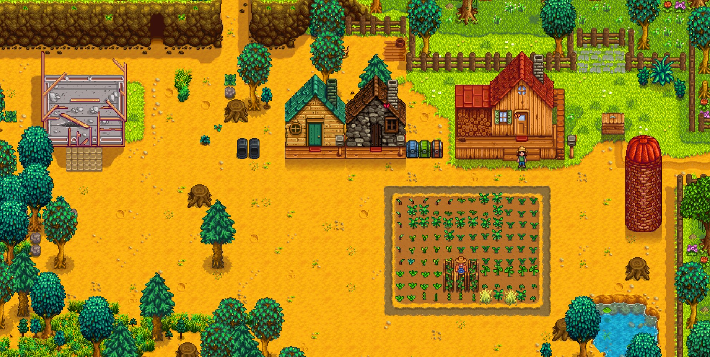
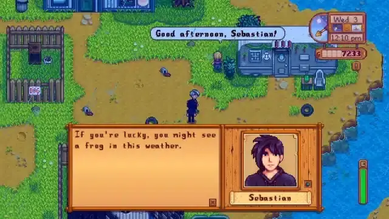
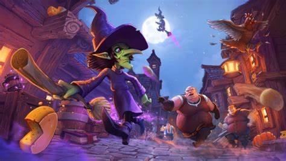
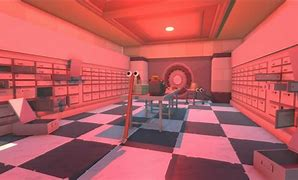
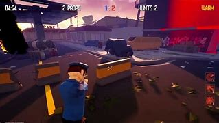

Secondary Research Cozy game
Audio inside of Stardew Valley was all created by ConcernedApe himself (Voicy. Stardew Valley), All audio inside Stardew Valley keep the same soft and calming tone that adds to the affect of the cozy game style. Stardew Valley uses simple audio throughout the whole game for every aspect of it when the player picks up and item or plants the sounds used stay the same tone (Voicy. Stardew Valley) making sure that the player feels like they are at home and can play casually without needing to stressed out by intense audio but instead kept calm with soft ambient audio for example Stardew Valley uses soft rustling of leaves or small gentle wind sounds other games like Animal Crossings uses the same intentions with audio as Stardew Valley does (Voicy. animal crossings). Both games follow the style of cozy using the same style of audio to help create that feel that both games create.
Although all the audio in Stardew Valley is different they all fit into the game and create that calming and peaceful tone that ConcernedApe intended the game to have even though the player has the option to turn off ambience players tend to always listen to the ambient sounds as it keeps the mood calming and peaceful without the added stress of listening to intense music like how Destiny 2 or Fallout does it.
In conclusion Stardew Valleys audio helps create that cozy feel allowing the player to enjoy playing the game at a steady pace and not having to rush through due to intense music, this makes sure that Stardew Valley stays cozy and not get intense or stressful for the player. Creating audio for a cozy game can be very difficult, Alot like how ConcernedApe took a few years to come up with the audio style of Stardew Valley and making it sound consistent throughout the whole playthrough.
Stardew Valley uses a very simple art style by using pixel art (Niko.) this keeps the visuals of the game looking very simple while still creating the feel of a cozy game. ConcernedApe choose to use pixel art as it helps create that smooth tone in the textures for example in the UI (Niko.) it uses a lot of different types of colours to create the look that he wanted by shading and blending colours together to create a simple yet effective look while still maintaining the cozy style that the game was intended to be.
Throughout the entire town ConcernedApe kept the entire environment and the buildings all blended together this was intended by the developer so it keeps the whole game at a consistent art style without any buildings props or environments from feeling out of place (Niko.) instead making sure it all fits together which is what allows Stardew Valley to have the feel of a cozy game. Even though Stardew Valley is pixel art the whole look of the game can be seen as hand drawn textures this creates a smooth transition between all styles of art within the game.
Stardew Valleys colour pallet stays the same throughout the whole game making sure that the whole game fits together even with the dungeon being complete different colours to the rest of the game (Niko.) it still fits into the game as the player never actually sees the dungeon and the outside world at the same time. ConcernedApe used the same affect inside of the dungeon as he did with the rest of the game keeping the enemies and even the environment the same by creating that smooth tone and blends to create the feel of being in a dungeon and still be stress free even when in combat.
Stardew Valleys gameplay relies heavily on its mechanics and interactivity from being able to maintain and create relationships with the fellow citizens to farming and gathering resources to keep you and the fellow NPCs alive. (Medium. (Sep 28, 2020).) Throughout the game the player must explore and collect resources for themselves or for quests given by the NPCs, with all the resources they collect they can either plant or water these resource by creating a farm and filling their bucket with water so they can grow crops to feed themselves and the whole village. The player can also do some Dungeon grinding which involves the use of attacking creatures although the developer ConcernedApe added a system where all attacks take stamina which the player can only gain if they go back home and rest. Stardew Valley punishes the player for running out of stamina by resetting them back to their house and lose all the items they had in their inventory and the time.
ConcernedApe also added power ups throughout the world which can help boost the player stamina levels allowing them to explore and farm for longer without needing to rest. In Stardew Valley the player also can store their items in a storage box outside their house allowing them to only carry the items that they need (Gamerant. (Nov 3, 2023).)
In conclusion interactivity in Stardew Valley plays a very big part in creating the feel of playing a cozy game. The game does this by not having a fast-paced game but instead having a chill calm game where you can progress at your own pace by either exploring or farming for hours on end. The choice is the players there is no forcing the player to progress to the games liking. This is super effective because games like Stardew Valley, Dreamlight Valley and Animal Crossings all follow the same style of interactivity allowing the games to feel player controlled and not forced by the creator allowing different styles of play for the players either letting them play slow and grind for hours or just speed run through the game trying to complete it as fast as they like without any limits of the game stopping them, this allows the game to feel entertaining to the players as its their choice on how they want to play.
 
References
Medium. (Sep 28, 2020). A Critical Play of Stardew Valley. [Online]. Medium. Last Updated: Sep 28, 2020. Available at: https://medium.com/game-design-fundamentals/a-critical-play-of-stardew-valley-c7ec30ef5070 [Accessed 28 February 2025].
Gamerant. (Nov 3, 2023). Stardew Valley Player Shares Neat Storage Room Designs for Foraging, Fishing, and Mining. [Online]. Gamerant. Last Updated: Nov 3, 2023. Available at: https://gamerant.com/stardew-valley-storage-room-designs-foraging-fishing-mining/ [Accessed 28 February 2025].
Niko. (N/A). Us - Stardew Valley Art Style Commission. [Online]. Niko. Last Updated: N/A. Available at: https://nikopaah.artstation.com/projects/JvD3za [Accessed 28 February 2025].
Voicy. (N/A). stardew valley | 29 Sound Effects found. [Online]. Voicy. Last Updated: N/A. Available at: https://www.voicy.network/search/stardew-valley-sound-effects [Accessed 28 February 2025].
Voicy. (N/A). animal crossings | 26 Sound Effects found. [Online]. Voicy. Last Updated: N/A. Available at: https://www.voicy.network/search/animal-crossings-sound-effects [Accessed 28 February 2025].
Secondary Research Prop Hunt
Visuals in Prop Hunt games can vary depending on the type of theme set for that game for example in a game like Witch It (Barrel Roll Games. (2020). Witch It) they are characterized using a vibrant, low poly art that combines a magical charm and nostalgia. The games aesthetic uses early features of 3D Games that uses simple geometric shapes that contribute to its playful and approachable atmosphere. Combining all these visual aspects it creates an immersive experience for the player making them feel like they are truly part of the games universe. The games colour pallet and art style help set the tone for the different regions offering the player a sense of mystery and danger while some maps create a sense of peace and wonder for the players.
Similarly, the game Run, Prop, Run! (PlayTogether Studio. (2021). Run Prop Run.) uses the same characterized vibrant low poly art style. The games aesthetic also uses early features of 3D Games that uses the same simple geometric shapes that combine to create a similar playful and approachable atmosphere. The games setting keeps the same rich detailed design. The game uses cartonny visuals with distinct props and characters, which helps the players understand the difference between players and the environment.
The visuals for the game Peekaboo (Redaster Studio. (2019). Peekaboo) uses the same low poly art style while keeping that vibrant aesthetic. Peakaboo still uses that early features of 3D games using simple shapes that hold the same geometric value when combining all this the game is very similar to other prop hunt games that use a playful and approachable style of play. The visual inside Peekaboo gives a more tactical feeling which heightens tension and immersion mostly for the seekers who need to search the map and pay close attention.
This Research will be helpful with creating my own prop hunt game as I will be able to adopt the same art style and visuals that all these games have in common to be able to create a warming visual style. This will help when creating visuals using a low poly art and a vibrant aesthetic. This will allow me to give the player a tactical feeling which is similar to Peekaboo and Run Prop Run as it helps heighten tension and immersion for the players. To help support this idea of following the same art style and visuals games like Peeakboo had a max of 274 players on 2 August 2021 (Run Prop, Run!. (25 April 2025). PlayTogether Studio.) aswell as games like Witch It uses this same visual design and had a highest rate of 4971 players on 4th December 2022 (Barrel Roll Games. (22 October 2020). Witch It Steam Charts.)
  
Interactivity inside of Prop Hunt games are all very similar for example in Witch It (Barrel Roll Games. (2020). Witch It) offers a highly interactive gameplay built around the mechanic where players switch between being witches and hunters. The witches can transform into any object around the level. Furthermore, the Hunters through chickens to interact with the level while trying to find the witches which deal damage on impact.
In Run, Prop, Run! (PlayTogether Studio. (2021). Run Prop Run.) interactivity is fast paced and chaotic, focusing on using movement to dodge the hunters while also focusing on teamwork. The props must hide as a everyday item while also working together to complete puzzles to unlock escape routes or to distract the hunters. The Hunters interact with the level by smashing objects or placing traps to make the game more dangerous or harder to hide in.
Peekaboo (Redaster Studio. (2019). Peekaboo.) using team based interactivity with a balance between stealth and action. The Props disguise themselves as common objects in the environment, while taking advantage of the layout of the map. Meanwhile the hunters can scan, shoot and destroy suspicious items using various types of tools. Peekaboo also has game chat that adds a layer of interactivity for the players forcing them to have spatial awareness and communication.
Using this research im gonna adopt a similar interactivity style to keep a balanced feel between stealth and action, allowing players to disguise as props or run around while hiding or being chased by hunters. This will help keep the game fun and replayable as games like Witch It (Barrel Roll Games. (22 October 2020). Witch It Steam Charts.) and Run Prop Run (Run Prop, Run!. (25 April 2025). PlayTogether Studio.) had a successful player base following this same interactivity style.
Witch it uses playful audio to help enhance its magical hide and seek theme. The witches emit soft magical sounds, giggles and audio cues when using their ability to taunt the hunters. While the hunters have heavier movement sounds and equipment noise, this creates the effect of an active pursuit. The ambience uses a fantasy setting using sounds like creaking wood or rustling leaves which helps deepen immersion.
Run, Prop, Run! has a more energetic and cartoonish sounds, using exaggerated sounds affects to amplify the chaos of each match. The props make bonk and boing noises when bumping into things or transforming that gives away their location and adds so comedic value. The chasers use louder audio for footsteps and weapons to warn any nearby players. Each map has its own unique soundtrack to create the lively feel of each level.
While Peekaboo has a clean and functional audio to help support its gameplay. The props have very minimal sound unless they move or interact allowing them to be stealthy. While Hunters movement and weapons create a loud and noticeable audio cue. The ambient sounds help create the effects of each setting for example some levels have echoing hallways or outdoor chatter. Optional voice chat can be used to communicate or bluff locations to the hunters.
After doing all research on audio styles and how they are used in multiple different types of prop hunt games, im gonna try adopt the same style of audio use in my game as from researching I learnt games who use a similar audio style get a very active player base for example Witch It (Barrel Roll Games. (22 October 2020). Witch It Steam Charts.) and Run prop Run! (Run Prop, Run!. (25 April 2025). PlayTogether Studio.)
References
Barrel Roll Games. (2020). Witch It. [Online]. Steam. Last Updated: 22 October 2020. Available at: https://store.steampowered.com/app/559650/Witch_It/ [Accessed 6 May 2025].
PlayTogether Studio. (2021). Run Prop Run. [Online]. Steam. Last Updated: 23 June 2021. Available at: https://store.steampowered.com/app/1475400/Run_Prop_Run__Puropu_Pursuit/ [Accessed 6 May 2025].
Redaster Studio. (2019). Peekaboo. [Online]. Steam. Last Updated: 7 August 2019. Available at: https://store.steampowered.com/app/1048100/Peekaboo/ [Accessed 6 May 2025].
Run Prop, Run!. (25 April 2025). PlayTogether Studio. [Online]. SteamDB. Available at: https://steamdb.info/app/1475400/charts/ [Accessed 13 May 2025].
Barrel Roll Games. (22 October 2020). Witch It Steam Charts. [Online]. SteamDB. Last Updated: 12 May 2025. Available at: https://steamdb.info/app/559650/charts/ [Accessed 13 May 2025].
Primary Research Cozy game
While playing Stardew Valley I loved how the game looked, sounded and feels there was no intense music it was all very relaxing with soft sounds, the games audio consists of calm ambience from a small breeze to birds chirping even with the in game sounds with the soft placement of footstep audio to the picking up items entering buildings and interacting with the AI in the world.
Even though Stardew Valley had a ongoing story I was able to play at my own pace and wasn't forced to stick to a certain path I was able to spend hours farming or exploring with no punishment the only sort of mechanic I had to worry about was my characters energy level cause if it hits zero it forces the player back home and clears their inventory.
While playing Stardew Valley I was constantly impressed by the art style used throughout the whole game and how amazing and consistent it looked and how it added to the feel of the game creating that cozy look and help create that relaxing feel I got while playing.
I created a questionnaire to gather insight from people who have played games in the genre of cozy. The purpose of the questionnaire was to understand what players like and dont like about cozy games so I can better understand all aspects of this genre.
While playing Stardew Valley. I felt relaxed very quickly. I loved the idea of being able to take each day at my own pace. By either farming or talking to the local villagers. The game was full of calming music with a cozy pixel art style combining all of these aspects in the game it creates a very safe space to play and enjoy the scenery. What stood out the most was how easy it is to connect to the world and embrace the warmth without the pressure of competing. After playing Stardew Valley I understood what goes into creating a game within this genre while keeping the sense of freedom.
Primary Research Prop Hunt
I played multiple rounds of prop hunt games like Witch it and Run Prop Run! Playing both roles hider and seeker. While playing hider I found it most enjoyable as I was able to run around as a funny item and find some crazy spots to hide in and taunt people. Also, as a seeker I found it more fast paced and strategic as I had to remember the map and find unusual prop placements which became frustrating at times when hiders blended into perfectly with the map.
Overall playing these games showed the fun prop hunt games can be being able to hide in funny spots or discover the crazy spots people find. Voice Chat added a lot funnier interaction with humour and tricking friends.